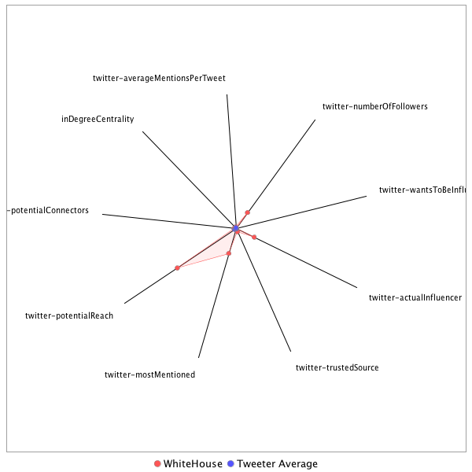

This tweeter has been identified as an influencer. Its target audience and hashtag and word usage are analyzed below.
Basic Statistics
Number of direct followers 1.46449e+07 The peak number of followers that the tweeter had during any time period. Number of retweeters 14 Number of agents that retweeted the key influencer. Number of secondary followers 4186387 The sum of the followers of those who retweeted the key influencer.
Measure Values of Other Influencers node versus Tweeter Average
This compares the measure values of the key influencer with the average values across all tweeters. For each measure line, the center-point means zero and the end-point means the maximum score across all tweeters.

Where was the influencer?
The agent is not recorded as being in any locations. Either he tweeted without geo-tags or we have no information about the tweets he sent.
The agent and retweeters were in 3 different locations.

What hashtags did the influencer use?
This displays the top ranked hashtags that the influencer and its retweeters used.
Rank hashtag Count 1 TheLead 271 2 MemorialDayWeekend 218 3 CNNsotu 132 4 ForTheRecord 130 5 NAFTA 88 6 potusabroad 71 7 RiyadhSummit 60 8 MemorialDay 49 9 BREAKING 46 10 China 41 11 Comey 39 12 Trump 38 13 ParisAgreement 33 14 trade 32 15 Bashir 31 16 fakenews 30 17 mtal 30 18 MAGA 29 19 SaudiArabia 24 20 Sudan 24 21 Manchester 23 22 Venezuela 21 23 LondonBridge 20 24 NBAFinals 19 25 SethRich 18 26 TPP 17 27 DubNation 16 28 JFK100 16 29 BestWarrior2017 15 30 ComeyTestimony 15 31 ISIS 15 32 ComeyHearing 14 33 GREECE 14 34 covfefe 14 35 RedSox 13 36 AHCA 12 37 HongKong 12 38 Mexico 12 39 TrumpinSaudi 12 40 USArmyReserve 12 41 GOP 11 42 ManchesterBombing 11 43 Riyadh 11 44 Russia 11 45 Taiwan 11 46 brexit 11 47 cdnpoli 11 48 BattleofWanat 10 49 COPKeating 10 50 G7Summit 10 51 GA06 10 52 MTpol 10 53 OANN 10 54 SessionsHearing 10 55 US 10 56 deepstate 10 57 flashback 10 58 genocide 10 59 LIBERIA 9 60 ParisAccord 9 61 PressForce1 9 62 TrumpInIsrael 9 63 presidentielle2017 9 64 ArmedForcesDay 8 65 Benghazi 8 66 Dartmouth17s 8 67 IMF 8 68 Iraq 8 69 Mosul 8 70 NeverTrump 8 71 Obamacare 8 72 Syria 8 73 TTIP 8 74 WTO 8 75 americafirst 8 76 Alexandria 7 77 Catholic 7 78 ComeyDay 7 79 ComeyMemo 7 80 FathersDay 7 81 Israel 7 82 Parisclimateaccord 7 83 PeaceOfficersMemorialDay 7 84 Qatar 7 85 Senate 7 86 StrengthInNumbers 7 87 Ukraine 7 88 balitoday 7 89 cdnecon 7 90 tcot 7 91 trumprussia 7 92 1917LIVE 6 93 ArmyBDay 6 94 BeltandRoad 6 95 BoroughMarket 6 96 Canada 6 97 CongressionalBaseballGame 6 98 DDay 6 99 EU 6 100 FBI 6
Tweet List
This displays all of the tweets of the influencer ordered from earliest to latest. Click on a tweet to see its status in Twitter.
Number Tweet ID Date Message 1 864297426324271105 2017-05-15 21:52:18-04 Tonight the White House is illuminated in blue in honor of #PeaceOfficersMemorialDay and #NationalPoliceWeek: https://t.co/fXYVvDkqJ5 https://t.co/ypMQ1D1qaL 2 866941612278075393 2017-05-23 04:59:22-04 We stand in absolute solidarity with the people of the United Kingdom. https://t.co/u54jWT7v6Q 3 873174574971600897 2017-06-09 09:46:56-04 .@POTUS: "Together, we are going to rebuild America for the future." https://t.co/AhsIfTGaMq 4 872093198247743489 2017-06-06 10:09:55-04 #OnThisDay 73 years ago, our brave troops fought for freedom on the beaches of Normandy. We are forever grateful for their heroic sacrifice. https://t.co/3RmJ23TVKg 5 869321474091302912 2017-05-29 18:36:05-04 "We traveled the world to strengthen longstanding alliances, and to form a new partnership..." #POTUSAbroad More: https://t.co/hKCPe5u59F https://t.co/cgUDkduooH 6 876440127031189504 2017-06-18 10:03:04-04 Happy Father's Day! https://t.co/32tFoVa4Ov 7 864502510085697536 2017-05-16 11:27:14-04 Today @POTUS will welcome the President of Turkey, Recep Tayyip Erdoğan, to the White House. https://t.co/j8dtbOCK1k 8 869966688136998913 2017-05-31 13:19:56-04 .@POTUS Proclaims June 2017 as National Caribbean-American Heritage Month https://t.co/X0dHUB2mAG 9 872524550780702720 2017-06-07 14:43:58-04 .@POTUS works to rebuild American infrastructure: https://t.co/0PLUSOBpCv https://t.co/MHN42J5MCX 10 870365829174394880 2017-06-01 15:45:58-04 .@POTUS on the Paris Accord: https://t.co/PJIJxort3Z https://t.co/5eChcJgoGF 11 870022827092488192 2017-05-31 17:03:00-04 .@POTUS Proclaims June 2017 as National Ocean Month https://t.co/C4tOI2JAm4 12 869985937966616576 2017-05-31 14:36:25-04 Today @POTUS will welcome the Prime Minister of Vietnam, Nguyễn Xuân Phúc, to the White House. https://t.co/h8urJHZBaF 13 865996967079444480 2017-05-20 14:25:41-04 .@POTUS and King Salman Sign Arms Deal: https://t.co/cX8chL8djM https://t.co/ZaGJPXzrEm